In dem Register "Varianten" erfolgt die Grunddefinition der Varianten der Stücklistenebene.
In der WinLine PPS gibt es 3 unterschiedliche Möglichkeiten mit Varianten zu arbeiten. Alle haben gemeinsam, dass pro Variantenart ein Standard vergeben sein muss, welcher durch das Kennzeichen "*" (in den PPS-Parametern abänderbar) definiert wird. Eine Bezeichnung hierzu kann in der Variantentabelle frei vergeben werden. Die Standardvariante kommt unter folgenden Voraussetzungen zum Tragen:
ü bei der Produktionsauftragsanlage wird die Variante "*" gewählt
ü bei der Produktionsauftragsanlage wird keine Variante hinterlegt
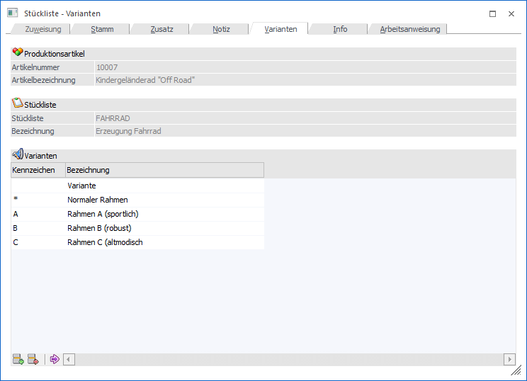
Folgende Eingabefelder, Einstellungen und Information stehen zur Verfügung:
Produktionsartikel
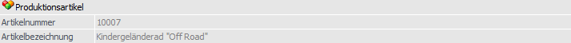
Ø Artikelnummer
An dieser Stelle wird die Artikelnummer des ausgewählten Produktionsartikels angezeigt.
Ø Bezeichnung
Hier wird die Bezeichnung des aktuell gewählten Produktionsartikels dargestellt.
Stückliste
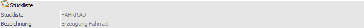
Ø Stückliste
An dieser Stelle wird die Nummer der ausgewählten Stückliste angezeigt.
Ø Bezeichnung
Hier wird die Bezeichnung der aktuell gewählten Stückliste dargestellt.
Tabelle "Varianten"
In der Tabelle werden die einzelnen Varianten der Stücklisten (d.h. dieser einen Ebene) hinterlegt, welche anschließend in der Tabelle "Bestandteile der Stückliste" (Register "Stamm") zugeordnet werden können.
Das Erscheinungsbild der Variantenerfassung ist abhängig von der Variantenart, welche in den PPS-Parametern (Bereich "Varianten") definiert wurde.
ü 0 - Varianten 1-Stellig
Wenn
diese Einstellung aktiviert ist, so können 1-stellig alphanumerische Varianten
im Stücklistenstamm hinterlegt werden.
ü 1 - Varianten 1-Stellig inkl.
Subvarianten
Wenn diese Einstellung aktiviert ist, so können Subvarianten im
Stücklisten-Stamm hinterlegt werden. D.h. innerhalb einer Stückliste können
unterschiedliche Arten von Varianten verwaltet werden.
ü 2 - Varianten 2-Stellig
Wenn
diese Einstellung aktiviert ist, so können 2-stellig alphanumerische Varianten
im Stücklistenstamm hinterlegt werden
Tabelle "Varianten" - Variantenart "0 - Varianten 1-Stellig"
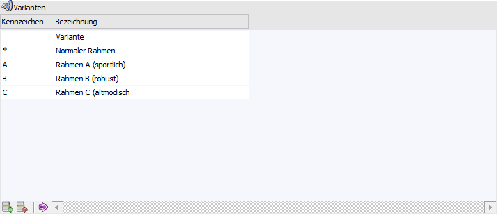
Zusätzlich zu der Standardvariante können weitere Variantenkennzeichen hinterlegt werden, wobei das Kennzeichen (1-stellig, alphanumerisch) und die Bezeichnung frei zu vergeben sind.
Bei dieser Variantenart ist es innerhalb der Auftragsanlage somit nur möglich pro Stücklistenebene ein Variantenkennzeichen auszuwählen.
Beispiel 1
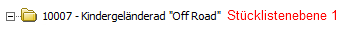
Ein Kindergeländerad kann in 4 unterschiedlichen Rahmenvarianten produziert werden. Um dieses abzubilden wird in der Stückliste des Kindergeländerads (10007 - Kindergeländerad "Off Road"), im Register "Varianten", die 4 Varianten (Standard + 3 zusätzliche Varianten) aufgenommen und in der Stücklistentabelle (Register "Stamm") den Komponenten zugeordnet.
ü Stückliste - Register
"Variante"
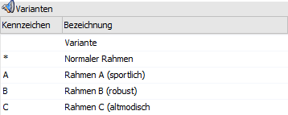
ü Stückliste - Register
"Stamm"
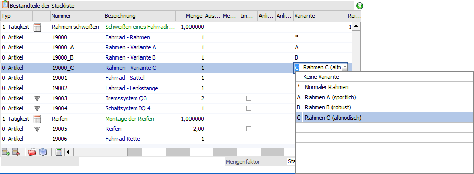
ü Produktionsauftragsanlage -
Fahrrad mit "Rahmen B (robust)
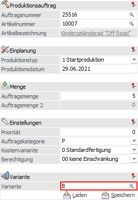
Beispiel 2
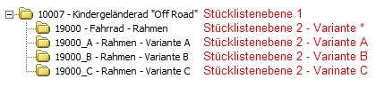
Der Rahmen des Kindergeländerads kann zusätzlich in 4 unterschiedlichen Farben geordert werden. Am sinnvollsten wäre es, die Fahrradrahmen als Produktionsartikel zu führen (dadurch entsteht eine weitere Stücklistenebene) und in diesen die Farben (mit den benötigten Komponenten) als Varianten aufzunehmen.
ü Produktionsauftragsanlage -
Fahrrad mit "Rahmen B (robust)" in der Farbe "rot"
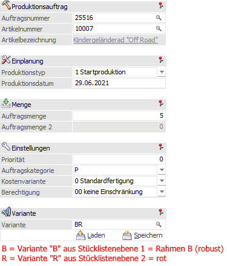
Tabelle "Varianten" - Variantenart "1 - Varianten 1-Stellig inkl. Subvarianten"
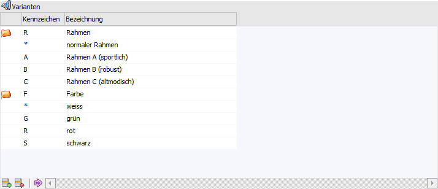
Mit Subvarianten ist es möglich pro Stücklistenebene mehrere
unterschiedliche Variantengruppen zu verwalten. Dabei werden die
unterschiedlichen Gruppen durch das Symbol voneinander getrennt. Neue
Variantengruppen können mit dem  Symbol angelegt werden.
Symbol angelegt werden.
Es ist darauf zu achten, dass nicht nur jede einzelne Variante, sondern auch jede Variantengruppe ein Kennzeichen (1-stellig, alphanumerisch) erhält und dass pro Gruppe die Standardvariante vorhanden ist.
Hinweis
Durch die Hinterlegung von Kennzeichen in den Variantengruppen und den beinhalteten Varianten ergibt sich pro Variantenart ein 2-stelliger Variantencode.
Beispiel 1
Es wird ein Fahrrad produziert, wobei dieses Fahrrad mit 4 unterschiedlichen Rahmen produziert werden kann. Zusätzlich zu der Rahmenart kann auch zwischen 4 unterschiedlichen Farben gewählt werden.
ü Stückliste - Register
"Variante"
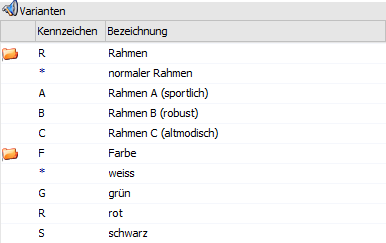
ü Stückliste - Register
"Stamm"
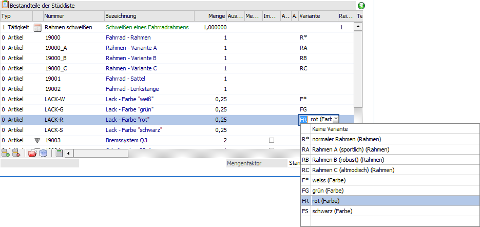
ü Produktionsauftragsanlage -
Fahrrad mit "Rahmen B (robust)" in der Farbe "rot"
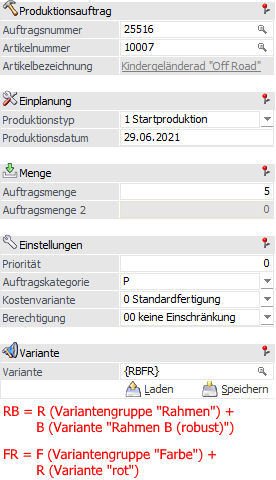
Hinweis
Mit den Klammern "{" bzw. "}" werden die Variantencodes pro Stücklistenebene zusammengefasst.
Tabelle "Varianten" - Variantenart "2 - Varianten 2-Stellig"
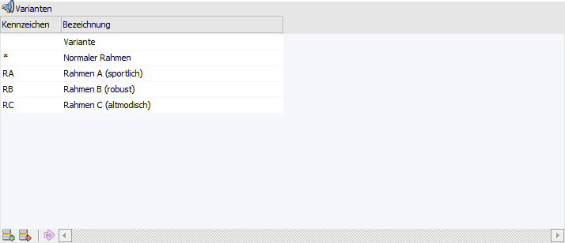
Im Gegensatz zu der Variantenart "0 - Varianten 1-Stellig " kann das Variantenkennzeichen 2-stellig sein, was eine größere Auswahl von Varianten ermöglicht. Die weiteren Parameter sind ident, d.h. die Standard-Variante wird auch in diesem Fall über das "*" gekennzeichnet und innerhalb der Auftragsanlage besteht nur die Möglichkeit pro Stücklistenebene ein Variantenkennzeichen auszuwählen.
Tabellenbuttons
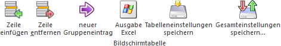
Ø Zeile einfügen
Durch Anklicken dieses Buttons kann oberhalb der aktiven Variante eine weitere Variante eingefügt werden.
Ø Zeile entfernen
Durch Anklicken dieses Buttons wird die aktive Variante gelöscht.
Hinweis
Es kann durch Anwahl dieses Buttons auch eine gesamte Subvariantengruppe inkl. aller Subvarianteneinträgen entfernen werden. Zur Sicherheit erscheint hierbei eine entsprechende Abfrage.
Ø neuer Gruppeneintrag
Durch Anwahl dieses Buttons wird eine neue Variantengruppe gebildet. Dieser Button ist entsprechend nur aktiv, wenn mit Subvarianten gearbeitet wird.
Ø Ausgabe Excel
Durch Anwahl des Buttons "Ausgabe Excel" wird der Inhalt der Tabelle an Microsoft Excel übergeben.
Ø Tabelleneinstellungen speichern
Die Spalten einer Tabelle können grundsätzlich an beliebige Positionen verschoben, bzw. in der Breite entsprechend angepasst werden. Durch Anwahl des Buttons "Tabelleneinstellungen speichern" werden die Einstellungen benutzerspezifisch gespeichert und bei dem nächsten Aufruf des Programmpunktes wieder vorgeschlagen.
Ø Gesamteinstellungen speichern…
Im Gegensatz zu "Tabelleneinstellungen speichern" können mit "Gesamteinstellungen speichern" mehrere Tabellenaufbauten gespeichert und nach Wunsch geladen werden. Zusätzlich werden Sonderfunktionen der Tabelle (z.B. "Spalte gruppieren") ebenfalls bei der Speicherung bedacht.